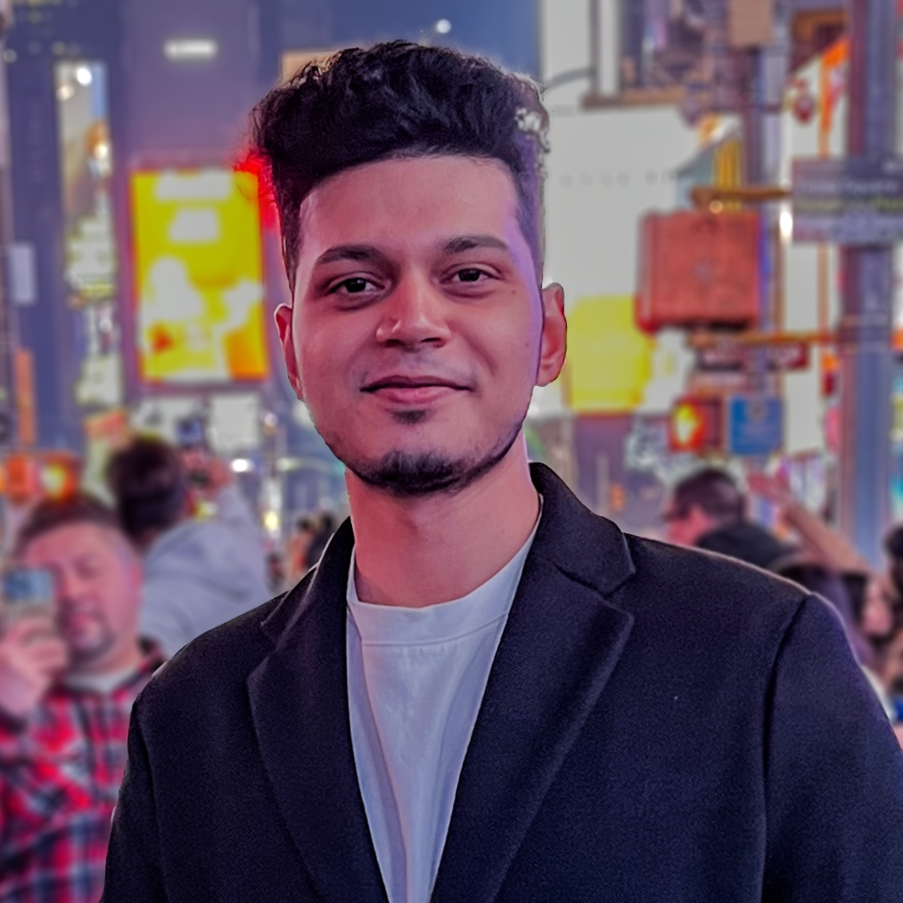
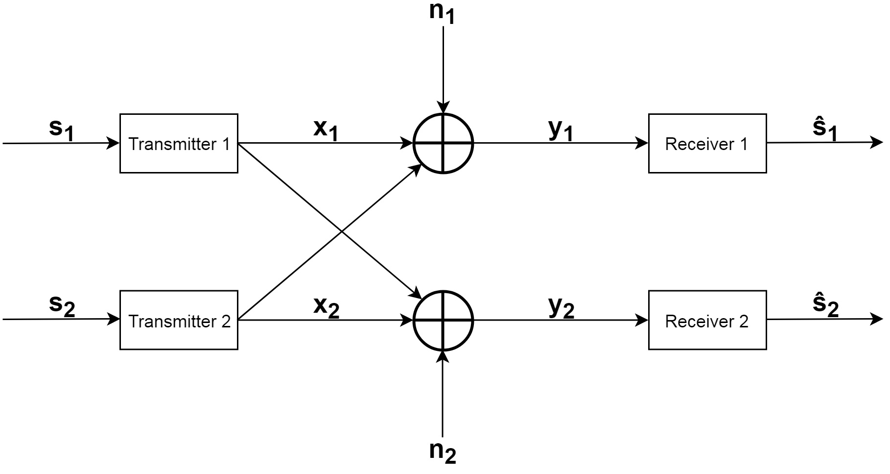

|

dibyadip (at) comp.nus.edu.sg
|
I am a first-year PhD Student in the School of Computing at the National University of Singapore. I am a part of CVML@NUS advised by Angela Yao and closely collaborating with Fadime Sener. My graduate research is supported by the President's Graduate Fellowship. I completed my bachelor's in Electronics & Telecommunication Engineering (ECE) from Jadavpur University where I worked with Sanjoy Kumar Saha and Ananda S. Chowdhury. My bachelor's thesis was on Open-Set Metric Learning for Person Re-identification in the Wild. Broadly, I am interested in understanding and emulating how humans perceive the 4D (3D+time) world. To this end, my current research revolves around the intersection of semantic understanding (recognition, anticipation, Q&A) of long-range (>30s) videos and 3D understanding of human-object interactions with a particular focus on open-world generalization. |
News
|
Publications & Preprints | |

|
On the Utility of 3D Hand Poses for Action Recognition
arXiv 2024 [New]
|

|
Opening the Vocabulary of Egocentric Actions
NeurIPS 2023
|
|
Assembly101: A Large-Scale Multi-View Video Dataset for
Understanding Procedural Activities
CVPR 2022
|
|
|
Technical Report: Temporal Aggregate Representations
arXiv 2021
|
|
|
Open-set Metric Learning for Person Re-Identification in
the Wild
ICIP 2020
|
|
|  |
Deep Learning Architectures for Modeling Communication
Systems
International Conference on Advanced Networks and
Telecommunications Systems (ANTS), 2019
[Oral]
|